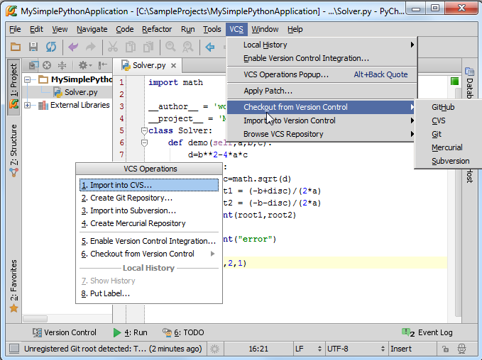
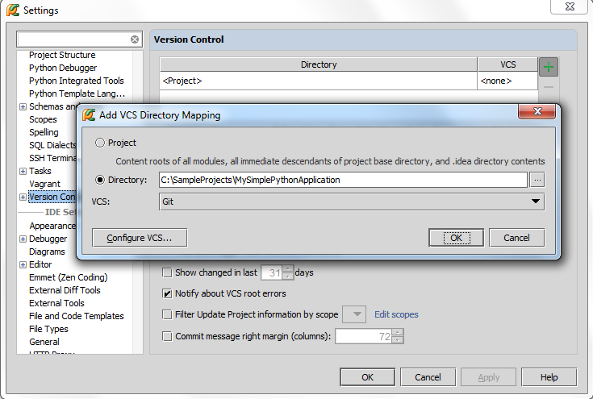
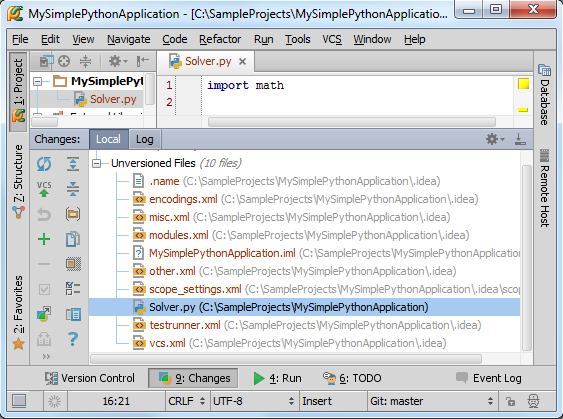
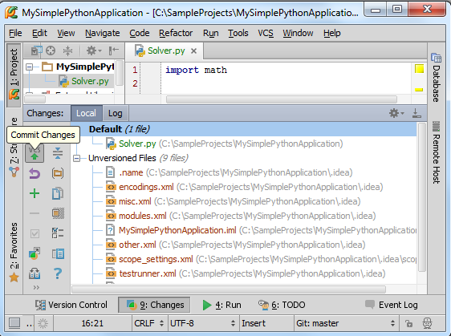
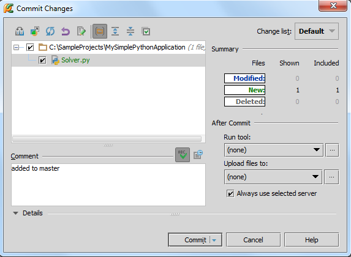
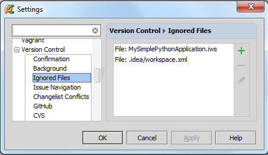
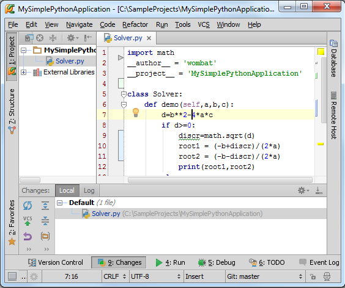
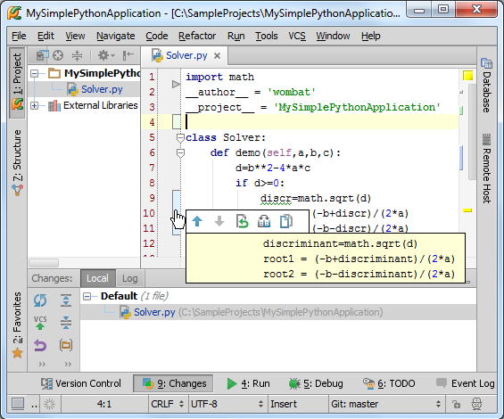

1、主题
介绍Pycharm的版本控制系统
2、准备工作
（1）Pycharm版本为2.7或者更高
（2）已经创建一个工程，参见Getting Started tutorial
（3）安装并配置了VCS，有远程接入权限
3、启用VCS
Pycharm默认版本控制不可用，不过可以在VCS菜单中找到相应命令：

此时Pycharm会根据本地历史来浏览外部资源，甚至可以从这个菜单中启用版本控制系统，不过此时版本控制只针对工程根目录，跟多具体配置参见下面章节。
4、启用版本控制
单击主工具栏上的控制按钮，单击 Version Control，默认情况下这里只有根目录<project>。
首先，单击绿色加号，在Add VCS Directory Mapping对话框中，单击省略号按钮，选择对应目录，在下面的下来菜单中指定版本控制系统（这里使用Git）。

当然，可以对每个目录指定对应的版本控制系统。
然后，单击应用，关闭对话框
5、对Pycharm外观的影响
（1）Solver.py文件颜色改变，意味着其尚未添加版本控制
（2）出现Changes tool window窗口，类似于一个按钮位于Pycharm下边缘。单击它可以打开窗口，查看尚未添加版本控制的文件。
（3）VCS菜单上出现更多命令，并且允许查看工程的更改以及更新整个工程，对应和按钮。主工具栏对应也会添加响应命令
（4）VCS菜单以及工程快捷菜单中出现Git节点（取决于所选择的版本控制），其中包含特定的VCS命令
（5）状态栏出现Git widget
6、对一个文件添加版本控制
在Changes tool window窗口中未进行版本控制的文件显示如下:

选中Solver.py，按下Ctrl+Alt+A来添加对应版本控制，文件颜色变为绿色，添加成功，但尚未进行托管。将文件移动到Default变更表下，按下Ctrl+K（或者）来进行托管：

核实无误，单击Commit按钮：

大功告成，Solver.py文件名再次变为黑色，意味当前没有未更新的更改。
7、.idea目录下的文件
单击 Changes tool window窗口中的按钮，发现工程根目录下的idea目录下的文件都未进行相关版本控制，并且这部分文件在工程窗口中不可见。
这部分文件保存了工程的配置信息，我们需要对其进行替换，除了版本控制文件。
8、忽略文件
打开设置对话框的Ignored Files page页（设置→Version Control→Ignored Files），查看默认忽略文件列表：

单击绿色加号选择忽略更多文件，详见 Configuring Ignored Files。
9、编辑器的变化
编辑代码，左槽会标记出所有更改：

单击一个标记，会弹出一个工具窗口：

这个弹出的工具栏能够帮助你进行导航、浏览更改等操作。
更多信息参见 Using Change Markers to View and Navigate Through Changes in the Editor
此时代码文件名变为蓝色，意味着当前存在尚未托管的更改。
10、获取更新日期
按下Ctrl+T
单击按钮
使用VCS→Update Project...菜单命令